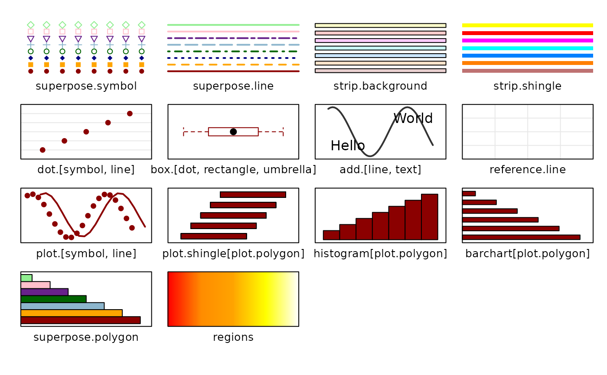

Data sets from The Analysis of Biological Data
abd-package.RdThe abd package contains data sets and sample code for the book,
The Analysis of Biological Data by Michael C. Whitlock and Dolph
Schluter (2009; Roberts and Company Publishers).
References
Whitlock, M.C. and D. Schluter. 2009. The Analysis of Biological Data. Roberts and Company Publishers. ISBN: 0981519407. http://www.roberts-publishers.com/biology/the-analysis-of-biological-data.html
Author
Kevin M. Middleton (middletonk@missouri.edu); Randall Pruim (rpruim@calvin.edu)
Examples
trellis.par.set(theme=col.abd()) # set color theme
show.settings()

abdData(3) # look for data sets in chapter 3
#> name chapter type number sub
#> 14 GlidingSnakes 3 Example 1
#> 15 SpiderSpeed 3 Example 2
#> 16 SticklebackPlates 3 Example 3
#> 17 KenyaFinches 3 Problem 4
#> 18 Rigormortis 3 Problem 9
#> 19 NorthSeaCod 3 Problem 10
#> 20 VasopressinVoles 3 Problem 11
#> 21 Antilles 3 Problem 12
#> 22 ElVerde 3 Problem 13
#> 23 Sparrows 3 Problem 18
abdData('Finch') # look for data sets with 'finch' in name
#> name chapter type number sub
#> 17 KenyaFinches 3 Problem 4
#> 72 ZebraFinches 13 Problem 16
#> 78 ZebraFinchBeaks 13 Problem 24